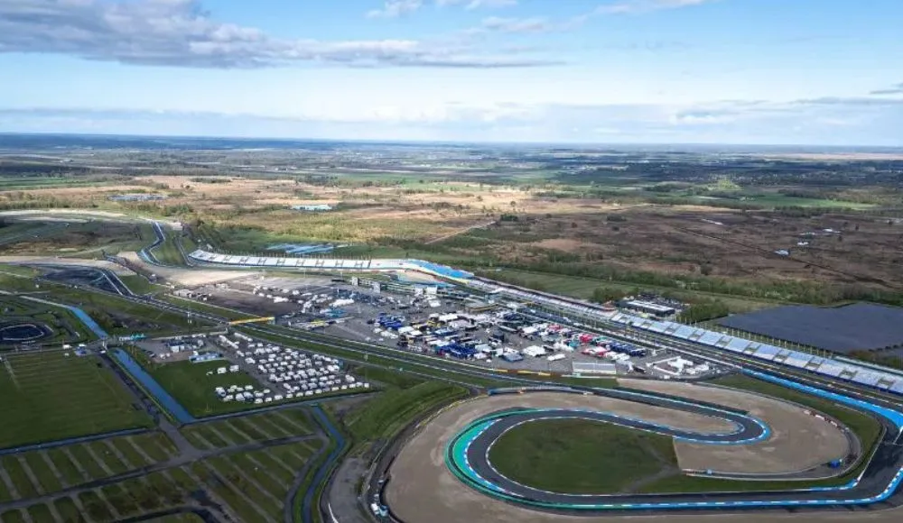
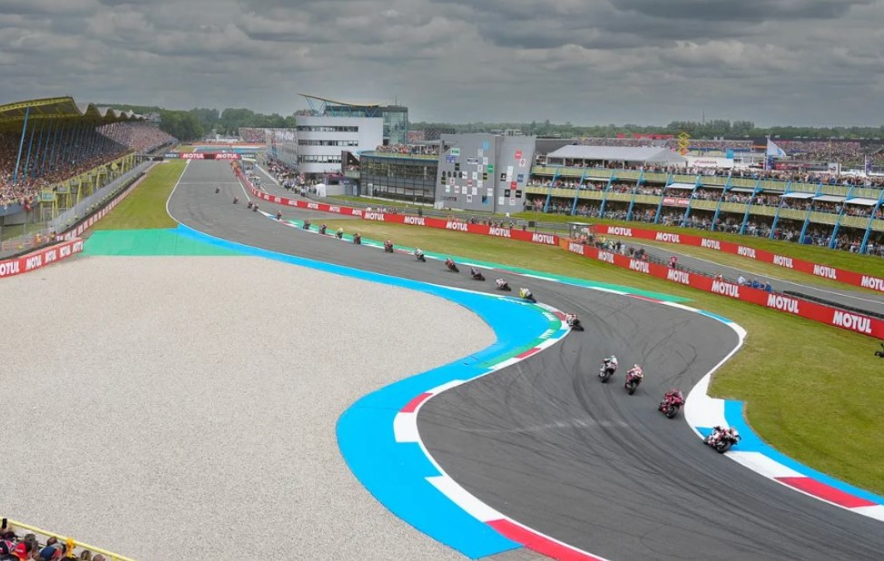
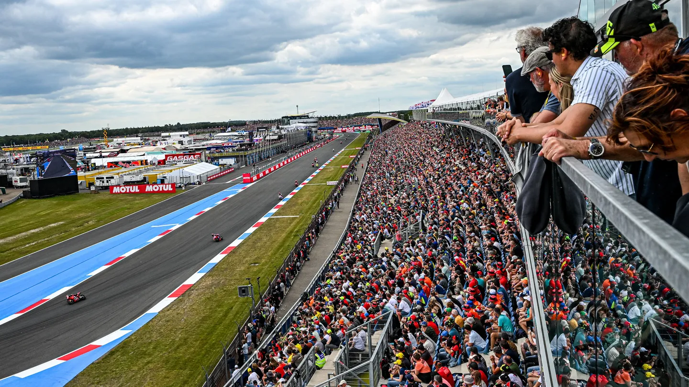

TT Circuit Assen
Información General
Longitud de pista: 4542 m
Anchura media: 14 m
Ubicación: Assen, Países Bajos
Patrocinador: Motul TT Assen
Información de Carrera
Fecha de carrera: 2025-06-29
Hora de inicio: 14:00:00 (UTC+2)
Número de vueltas: 26
Referencias
Galería de Fotos



Galería de Videos
Resultado de Carrera
Vencedor: Marc Márquez
Equipo: Ducati Lenovo Team
Tiempo: 0h 41m 07s 651ms
Clasificación Mundial 2025
| Posición | Piloto | Equipo | Puntos |
|---|---|---|---|
| 1 | Marc Márquez | Ducati Lenovo Team | 307 |
| 2 | Álex Márquez | BK8 Gresini Racing MotoGP | 239 |
| 3 | Francesco Bagnaia | Ducati Lenovo Team | 181 |